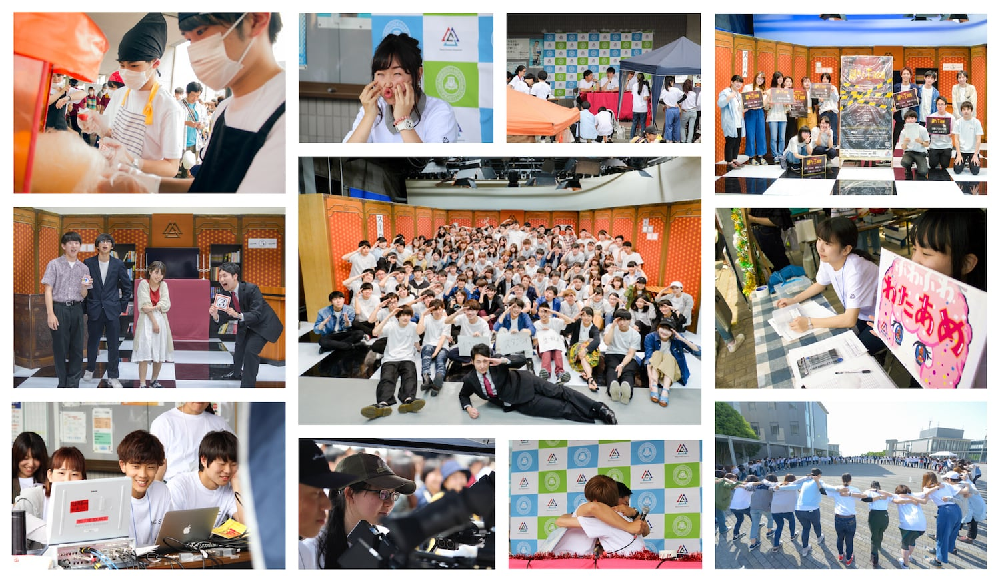

高槻キャンパス祭 終了

高槻キャンパス祭にご来場いただいた方、ありがとうございました。
MCSではスタジオでの観客参加型謎解きイベントの開催、FRESH!を使ったwebでの生放送の配信や模擬店でわたあめを販売するなど、様々な活動を行いました。
今年はいずれも大盛況で、特にスタジオイベントでは午前公演･午後公演ともに満席となり、午後公演は予定していた人数をはるかに超える多くの方にご来場いただきました。生放送でも視聴者数が1,000人を超え、その日のFRESH!トーク企画部門で2位になるという快挙を成し遂げました。模擬店でもお客さんが絶えることなく、今年のキャンパス祭は大成功に終わりました。ありがとうございました。
この結果を受け、より良いものを作り上げて参りますので来年も高槻キャンパス祭に是非お越しください！